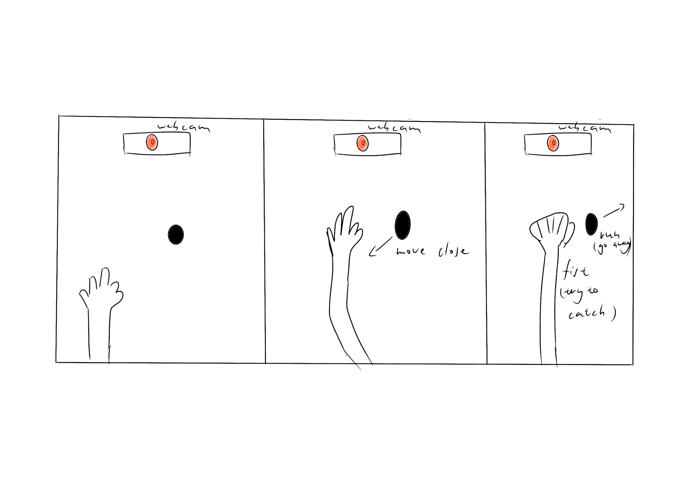
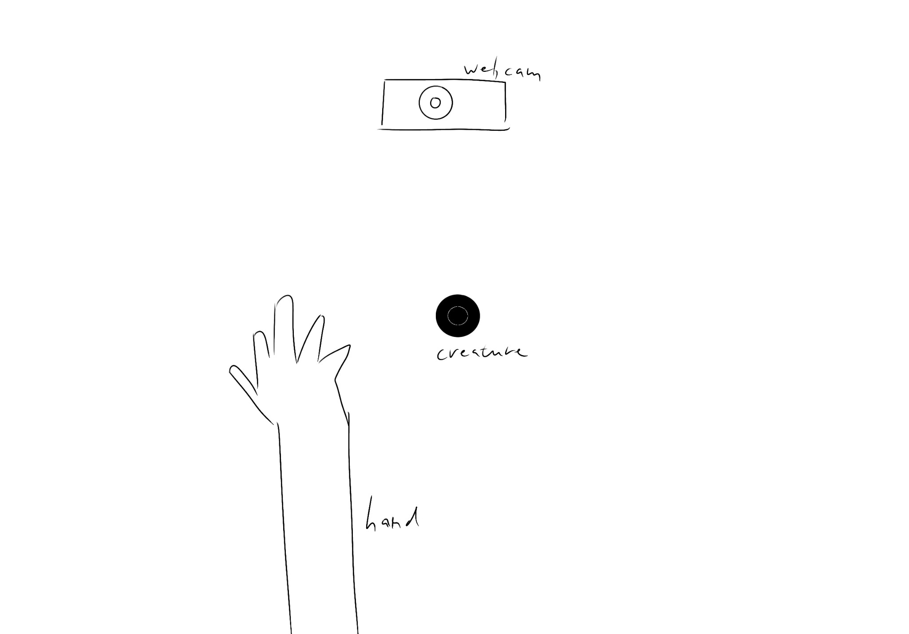
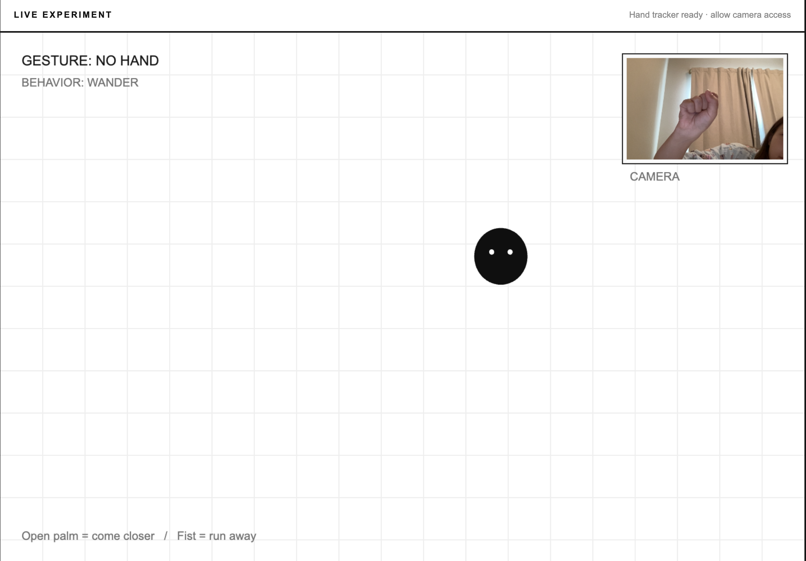
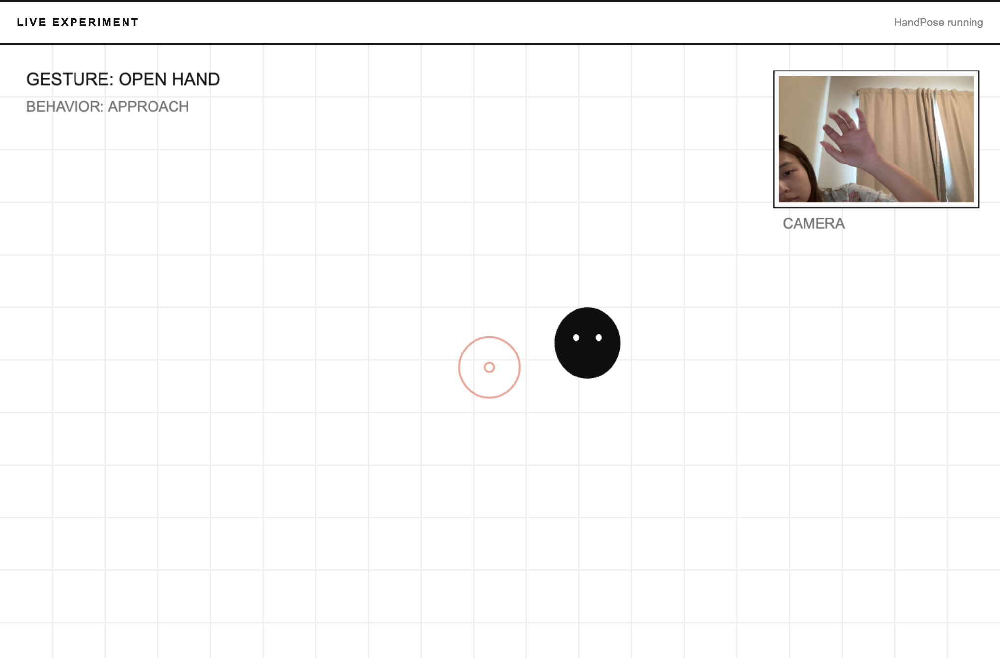
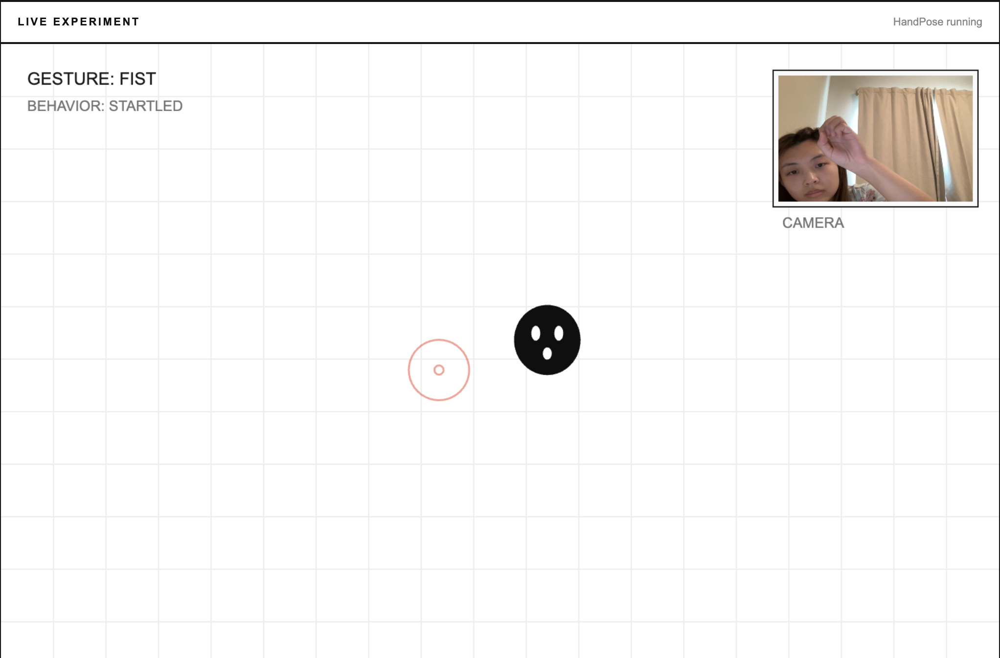

A tiny creature that likes your open hand — but runs away when you try to catch it.
LIVE EXPERIMENTPreparing camera…
01 Show an open hand → it approaches02 Make a fist → it panics and escapes03 Let go → it eventually returns
01 / CONCEPT
Proposal
Don’t Touch Me! is an interactive experience that reacts to the human hand with a digital creature. The system uses a webcam and machine learning to detect the participant’s hand and turns it into an unpredictable relationship between human and nonhuman behavior.
The creature is not like a normal UI element, which just does what it's told. Instead it resists control. When the participant reaches for it, it escapes. It returns slowly when the participant stops trying to control it. The work turns interaction into a playful negotiation, rather than direct control.
First prototype goal
The first prototype will be able to detect one hand and animate one creature that will move away from the hand when it gets close.
The gestures are estimated from finger-joint distances, not trained as fixed images. The background does not need to be classified.
03 / IDEATION SKETCHES
Early interaction drawings

Sketch 01 — gesture-to-behavior sequence

Sketch 02 — camera and creature layout
04 / DEVELOPMENT
From failed detection to working interaction
Development 01 — Hand not detected
In my first live test, the webcam successfully showed my hand, but the interface continued to report GESTURE: NO HAND and BEHAVIOR: WANDER, even when I held a fist clearly in front of the camera. The visual interface and video input worked, but the hand tracking did not yet produce usable results.

Test 01 — FAILED DETECTION. The fist is visible in the webcam preview, but the prototype still reads “NO HAND.” This screenshot records the original bug before the fix.
Debugging log
Problem: A visible hand was not detected, so the creature kept wandering instead of reacting.
What I checked: Because the camera preview was visible, camera permission and basic video capture were working. I focused on the HandPose model initialization and detection callback.
Change: I moved the HandPose model initialization into p5.js preload(), started detection after the camera was created, and tested the gesture labels again.
Result: The prototype began identifying both an open palm and a fist, allowing the creature to approach or enter its escape sequence.
Development 02 — Gesture tests succeeded
After fixing the detector setup, I tested the two main interactions separately. The next screenshots capture the recognized gestures and corresponding behavior states.

Test 02 — OPEN HAND / APPROACH. The model recognizes an open hand and the creature approaches the palm.

Test 03 — FIST / STARTLED. The model recognizes a fist and changes to STARTLED. The following animation sends it running off-screen.
What worked
Both intended gestures were recognized during testing. The open hand triggered APPROACH; making a fist triggered STARTLED and the escape sequence. The creature changes its behavior based on the participant's body, without any connected physical controller.
Reflection / next iteration
The prototype demonstrates a simple emotional relationship: an open palm feels inviting, while a closed fist feels threatening. Next, I want to make the creature more expressive and improve gesture recognition under different lighting conditions and hand angles.